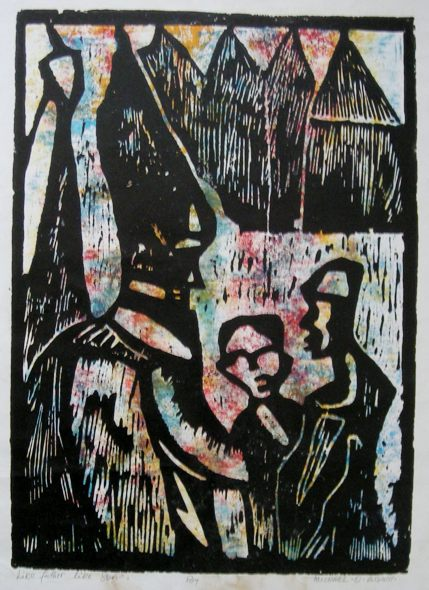

Michael O. (Okah) Agwu
1948–2016
Artist Biography
Michael Agwu was born in Ibii village, Ehugbo (formerly Afikpo), Ebonyi State, Nigeria. He trained under Professor Solomon Irein Wangboje at the Ori-Olokun Cultural Centre, University of Ife, from 1971 to 1974. Following his training, he taught at the University of Benin and later at the University of Port Harcourt in Nigeria.
Working primarily in woodblock and linocut prints, Agwu also produced works painted on cloth and executed batik art. He held a notable solo exhibition at the University of Port Harcourt in 1989 and exhibited internationally, including a solo exhibition in Easton, Maryland, USA (1990). His work was selected to illustrate the catalogue for Paradox of the New: Art from Africa at the South Swan Gallery in Bradford, UK (1991).
His work was included in major group exhibitions such as Contemporary Art from Nigeria at the University of California (1971, 1972), as well as shows at the National Museum in Lagos (1972), the British Council in Enugu (1973, 1980), and the Gong Gallery in Lagos (1975). In his later years, Agwu lived and worked in London. His artistic legacy was studied by African art scholar Simon Ottenberg at the University of Washington, Seattle, and his work Argungu Fishing Festival is held in the permanent collection of the University of Oxford.

Like Father Like Sons